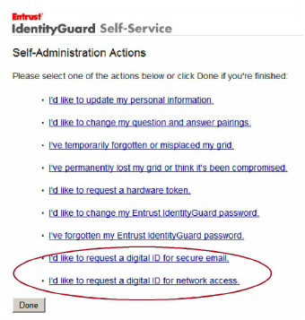
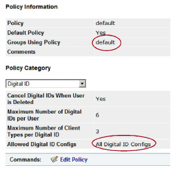

|
IdentityGuard Server 13.0 Administration Guide |
|
IdentityGuard Server 13.0 Administration Guide |
Add links for digital ID enrollment to the Self-Service Administration pages. Follow the instructions below.
To add links
1. Open the Self-Service Configuration interface (available from the Start menu on Windows or by entering https://<SSM_host>:8446/IdentityGuardSelfServiceConfig in a browser).
2. From the menu at the top, click Administration.
3. From the Table of Contents, click Digital ID Self-Administration.
4. Make the appropriate selections and click Validate & Save. For details on each setting, see the Entrust IdentityGuard Self-Service Module Installation and Configuration Guide. Most are self-explanatory.
5. Optional. Test that the digital ID links were added, as follows:
a. Restart Self-Service (available from the Services panel on Windows, or by entering igselfservice.sh restart from a command shell on Linux).
b. Log in to the Self-Service application as mobileenroll.
The Self-Service application is available from the Start menu on Windows, or by entering https://<SSM_host>:8445/IdentityGuardSelfService in a browser.
The digital ID links should appear at the bottom.
Note: Although the links appear, digital ID enrollment may not work yet.

If the links do not appear, it may be because:
● You incorrectly configured the Self-Service account. It requires the appropriate permissions. See Step 16: Give Self-Service more permissions.
● There is no digital ID configuration. The digital ID configuration is added in Entrust IdentityGuard, and then referenced by Self-Service. See Step 10: Add a digital ID configuration and Step 18: Configure Self-Service Administration.
● The user who is logged in is in a group that is not allowed to see the digital ID configuration that you set up. This is configured through Entrust IdentityGuard policy. In the example below, you can see the default policy. This policy stipulates that users in the group mobileenroll are allowed to view all digital ID configurations.
